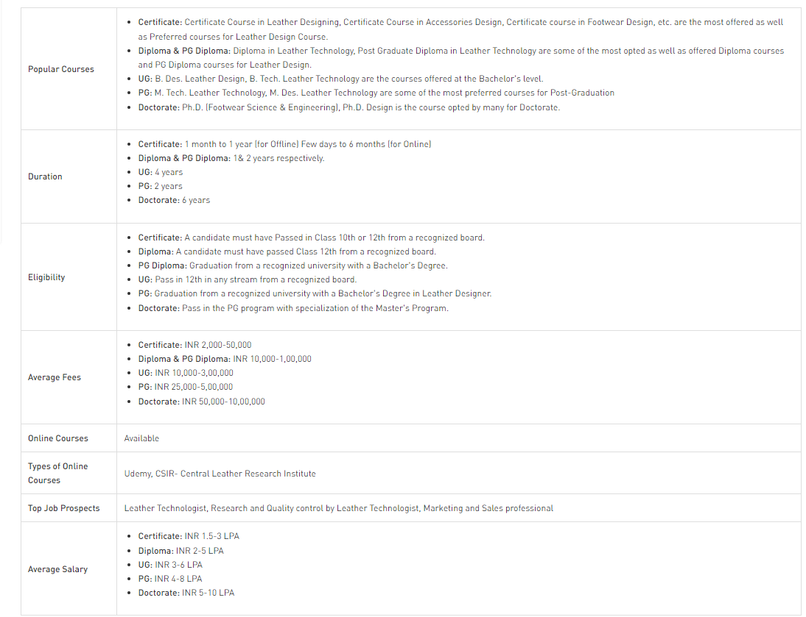
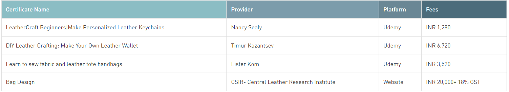

Leather Design Courses deals with design of leather products used in leather products of top branded companies. Leather Design Courses comprehensive knowledge about leather raw materials, their processing, product care, etc. It is a Billion-dollar company having great scope for leather designers because most of the luxurious brands have products made of leather. A student after completing Leather Design Courses may earn an average salary of INR 4,50,000 at the start of his career and can be employed by many Indian brands such as Red Tape, Bata, Khadim’s, Action, Liberty, etc. as well as International brands which include Marks and Spencer, Clarks, Hush Puppies, Lee Cooper, Louis Vuitton, etc. The duration of the above courses varies from course to course i.e Certificate courses can take from hours to years and that a Bachelor's Degree can be of 3 years, Masters can be of 2 years, etc. All courses such as Diploma, PG Diploma, Bachelor, etc. are provided mostly in offline modes. These are all full-time courses.
Below are the highlights of different Leather Design courses offered in India.
Certificate courses give an overview of a course. It is mostly an entry-level course. In the certificate courses, the basics of the course are taught. Certificate courses can provide entry-level jobs. The duration of a certificate course can range from a month to a year and can cost up to INR 60,000, while a fresher can earn up to INR 2,00,000-INR 2,50,000 by doing a certificate course.
Certificate in Leather Designer is mainly offered in offline Institutes.
Below is the list of some courses which are curated by us and are available online.
Many institutes and training centres offer Leather Designer certificates through classroom methods of teaching. Some of the best offline certificates for Leather Designer are curated below.
| Certificate Name | Colleges/ Institutes Offering | Average Fees |
|---|---|---|
| Certificate in Leather Designing | YMCA, NIFT, Central Footwear Training Institute | INR 15,000 |
There are no entrance exams for certificates however some institutes can take admissions based on scores obtained in 10th or 12th or Some premier institutes may analyse your profile and then get you admitted. Enrolment in online certificate programs can be simply done by applying on the website of the course provider.
These courses give you a wide briefing about the course which can help you decide the field for your graduation and career. These courses can be preferred by those who want to enter the Job Sector soon or those who do not want to dive deep and give 3 to 4 years for those courses.
Some Institutes offer Diploma Courses (3 years) as well as Post Graduate Diploma Courses (2 years). The Diploma Courses can be pursued after you have completed the 12th or 10th class while Post Graduate Diploma can be done after one has completed Graduation.
The average salary of a Diploma Candidate can be 2-5 LPA in India whereas from a PG diploma one can expect INR 8,00,000 on an average.
Some of the popular diploma courses which can be pursued in the field of In Leather Designer are given below.
Admissions in diploma courses are done based on the minimum score required for admission which is given by the university/college. The cut off list is released by the college/University after all the applicants have filed their applications.
For Admission in Diploma courses, Scores of Class 12th are considered, whereas for PG Diploma Graduation Scores are taken into account.
Given below are some of the colleges in India which offer Leather Designer Courses in both diploma and PG diplomas.
Leather Technologist works in a manufacturing industry and helps to synthesis, Production, and refining of leather products like footwear, wallets, clothes, gloves, belts, etc.
INR 3,50,000
Marketing and sales professionals work towards increasing the popularity of a product and increasing the revenue of a company. They are responsible for increasing the customer base.
INR 4,50,000